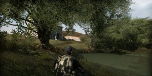
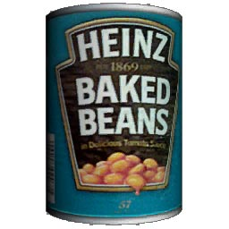
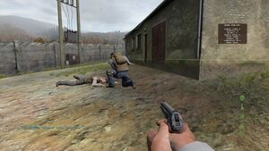

DayZ - культавая игра в жанре survial-horror.
Нужно быть осторожным и думать тактически, чтобы выжить!
Уходите от побережья
Побережье, как не странно, является одним из САМЫХ ОПАСНЫХ мест вообще в игре. Это относится абсолютно к любой карте. Поэтому, если вы не хотите чтобы Вам отстрелили (или откусили) задницу, уходите вглубь, и не лезьте пока на рожон.
Найдите пропитание
Еда и питье — залог выживания в принципе. Без них Ваш персонаж будет медленно умирать от обезвоживания или недоедания. Поэтому, найдите еду и питьё, сразу, как только возродитесь.
Огнестрельное оружие - НЕ против зомби
Оговорюсь сразу — огнестрельное оружие привлекает толпы голодных мертвецов (кроме того случая, если вы стреляете из оружия с глушителем, однако только SD патроны позволяют их косить бесшумно). Поэтому, используйте топор или другое оружие рукопашного боя. Кроме того, в DayZ вовсю работает закон подлости. Это значит, что патронов будет много, но только не к вашему оружию. Ах да, огнестрел — ваш помощник в борьбе с другими выжившими.

Топор - ваш друг и соратник
ИЩИТЕ топор! Этот маленький ублюдок не требует патронов, бесшумен, с его помощью вы сможете нарубить дров, и он убивает зомби с одного удара. Хотя в последнем патче зомби усилили и поэтому его эффективность чуть упала.
Крупный город таит опасность
Не идите в крупные города в одиночку и с ценным лутом в рюкзаке! Самое меньшее, что вы там найдете — это пуля в голову.
"Милитари", Собор и Северо-западная взлётно-посадочная полоса (СЗ ВПП)
Тут вообще отдельный разговор. Куча снайперов будут поджидать вас везде и всегда. Даже если вы уверены, что никого нет, проверьте еще раз, для профилактики. Лутайте только самое нужное — GPS, оружие и пр. Не берите кучу не нужного хлама, а после — неситесь со всех ног в лесополосу. Если вы уверены, что никого нет, можно скинуть дымовую или банку чтобы отвлечь зомби.
Транспорт - великая роскошь
И это не преувеличение. Транспорт — очень редкая и великая роскошь, которую вы должны холить и лелеять, как зеницу ока! Найдя транспорт (УАЗ, пикап и др.), вы должны починить его! Бегите к факторке (англ. factory — заводы, гаражи, фабрики) и ищите детали! Старайтесь прятать ваш транспорт подальше от центра, окраин и аэропорта.
Дpузья - это хорошо
Они прикроют спину! С друзьями проще и веселее играть! Но..
Это... DayZ, baby!
Не каждый тот, за кого он себя выдает. Если это не ваш давний друг, то держите палец на курке автомата и будьте готовы к выстрелу в спину